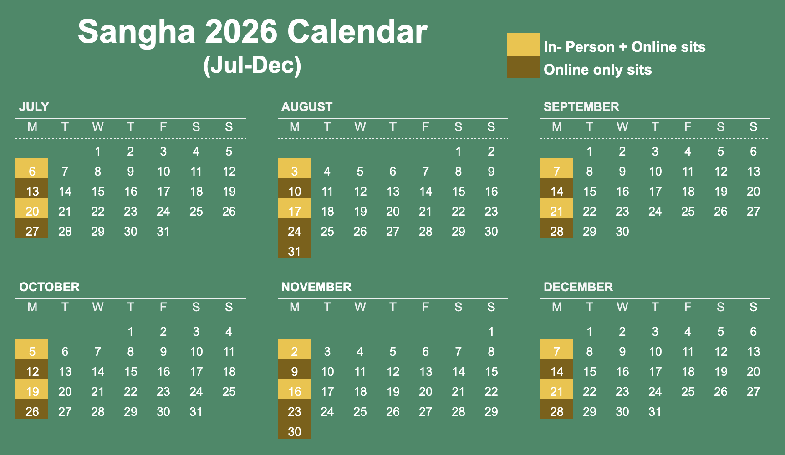

Join us any Monday night from 6:30pm to 8pm AEST. No need to let us know, just drop in.
We're online every week, as well as in-person (hybrid with online) on the 1st and 3rd Mondays of the month. Check the calendar below for more schedule details.

Inspired by engaged Buddhism and the teachings of Zen Master and activist Thich Nhat Hanh, we come together to practice mindfulness in order to take care of ourselves, nourish happiness and contribute to building a healthier and a more compassionate society.
While we were once a Wake Up group for young mindfulness practitioners aged 18-35, our group has grown beyond the traditional age ranges of Wake Up. Today as Flowing River Sangha, we welcome practitioners of ALL AGES :)
Our aspiration is to help our world which we see is overloaded with intolerance, discrimination, craving, anger and despair. Seeing the environmental degradation caused by our ways of living, we want to live in such a way that our planet Earth can survive for a long time.
Practicing mindfulness, concentration and insight, enables us to cultivate tolerance, non-discrimination, understanding and compassion in ourselves and the world.
Each weekly meetup will involve a variety of mindfulness practice such as deep relaxation meditation, sitting/walking meditation, music, sharing and more.
You don't have to be a Buddhist to be a member, however we ask every person to be open minded and respectful to maintain a safe space.
This group is offered in the spirit of Dana (generosity). If you feel inspired to offer Dana through a donation, your support will help sustain the Sangha in covering the costs of room hire and Zoom subscription. There is no expectation at all to do so. Anything we receive over our costs will be donated to Plum Village. PayID is: brisbanewakeup@gmail.com